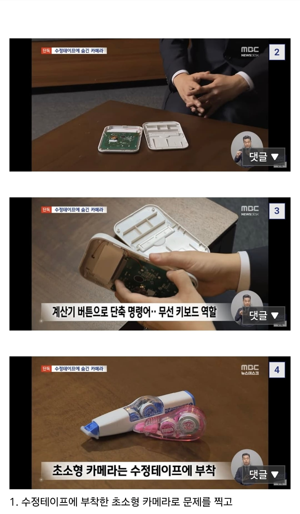

원래 불법이 더 부지런한법이지
시발 저게 맨앞자리에서 했다고....?
맨앞이라 오히려 안걸렸을듯
저당시에는 ai로 커닝한다는 사실을 잘 몰라서 어쩔수 없었을듯
왜 하필 cpa랑 cta를 봤지 싶었는데
계산기랑 휴대폰 때문이었나 보네
세무냥이 머리로는 나올 수 있는 견적이 아닌데? 저거 할 수 있는 머리였으면 적어도 지거국은 갈 수 있었을텐데?
저거 하는법도 ai 한테 물어보면 딸깍인데
원래 로봇고 출신이어서 기계 개조하고 코딩 하는데 익숙하긴 할 거임
기계 만지는 기술은 있긴 한가봄
나름 열심히 했네
안주머니를 계속 보는데 안 걸렸다고? 감독관 일 안 했노
오히려 제일앞이고 고개숙인상태에면 쉽지않았을거 같기도
시험 가격은 더 오르겠네
노트북으로 돌리는 로컬 모델도 걍 만점 받는구나..
노트북에 pc앱 깔고 권한 허용해서 코덱스나 클로드 코드 같은게 노트북 조작하게 해도 됨
로컬했다는 말이없는뎅? 그리고 로컬그렇게 성능좋지않아서 만점못받을꺼임 리트수준은
코덱스 클로드 SDK 있어서 이거 쓴듯
리트냥이 수법은 뭘까?
고수네
폰 걷어봤자 미리 준비한 서브폰 내면되는거
뭔 마술 비밀 알아내는것도 아니고...
폰으로 OCR하기 힘드니 노트북까지 전송시킨건가보네
로컬을 돌린게 아니라
전자계산기 대신 주판으로 시험 치르게해
국정원 요원급으로 무장했네 ㅋㅋ
얘가 자수 안했으면 수능날에 ai안경만 잡았겠네
못잡을만하네 저정도 대가리 굴리는놈이 왜만점받아들키냐
근데 안주머니를 어케 보는거임
가슴에 달린 주머니 말하는 듯
IT 강국
계산기를 모니터로 개조하고 본줄 알았는데 안쪽 주머니에 초소형 모니터라니;;
딸깍이 아니긴 하네
장바장부터 문제다
초소형 모니터 봐야되는거면 자세히 감독하면 걸리겠는데?
계산기 비싼데 ..
중국기술력일껄 중국이런거 상상초월함
열심히 걸었구나. 올바르지 않은 방향으로. 이래서 거리보다 방향이 중요하다.
저거보다 수능뚫린게 더 궁금함
옛날에는 초소형 이어폰으로 답 듣는 형식으로 했을걸
시험문제는 유출 했을거고
안주머니보기<이거 어떻게한거냐? 감독이 없는수준 이었나ㅋㅋㅋ
그냥 조용히 업자로 전향했으면 얼마나 돈을 벌었을지 감이 안온다.
진짜 나쁜쪽으로는 머리가 똑똑하긴했네